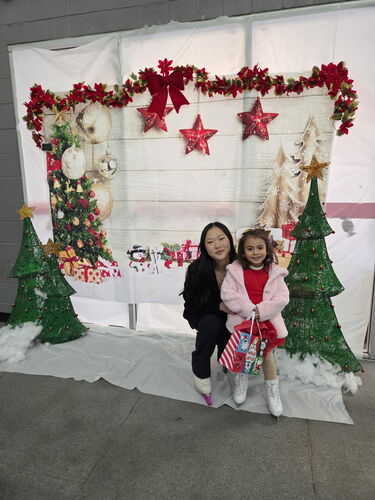
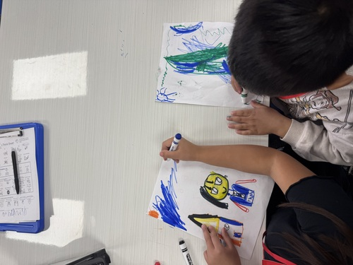
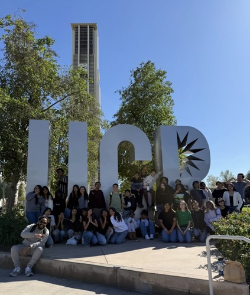
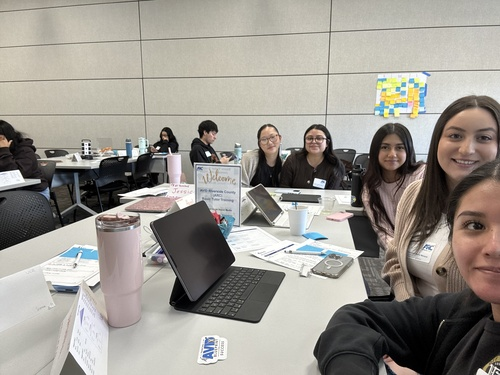

Hi! My name is Jessica Lee, and I'm currently a student at the University of California, Riverside. I've always enjoyed working with people, especially when it comes to helping others learn, grow, and become more confident in themselves. Over the years, I've had the opportunity to work in different educational settings, and each experience has helped me discover just how much I enjoy being a part of someone's learning journey.
One of the biggest parts of my life has been figure skating. I started skating when I was 6 years old and eventually began coaching at just fourteen years old. What started as something I loved doing turned into an opportunity to share that passion with others. I've worked with students of all ages and skill levels, and one of my favorite things about coaching is watching someone finally accomplish something they've been working so hard toward. Whether it's a young skater learning their first skill or an adult stepping onto the ice for the first time, I love being able to celebrate those little victories with them. Coaching has taught me a lot about patience, communication, and the importance of understanding that everyone learns at their own pace.
Outside of the rink, I've also found a passion for education through my work as an AVID tutor at the high school level. I get to work with students as they navigate their classes, prepare for college, and figure out what they want to do in the future. Having been in their shoes not too long ago, I really enjoy being someone they can relate to and turn to for guidance. I try to make learning feel less intimidating by encouraging students to ask questions, critically think through challenges, and recognize what they're capable of accomplishing. Some of my favorite moments are connecting with my students and getting to watch them succeed.
I've also had the opportunity to work as a Program Leader with Think Together, where I helped create a fun and supportive environment for students outside of their regular school day. This experience gave me a different perspective on education and showed me how important it is for students to feel comfortable, included, and encouraged. It also reminded me that learning doesn't always have to happen behind a desk.
As I continue my education at UC Riverside, I've become increasingly interested in psychology and the role it plays in how students learn, develop, and navigate challenges. My goal is to eventually pursue a career in school psychology or teaching, where I can combine my love for education with my interest in understanding and supporting others.
Outside of my professional responsibilities, I enjoy staying active, spending time with my family and pets, and baking/cooking. I believe that some of the most consequential experiences come from stepping outside your comfort zone and being open to growth. Whether I'm in a classroom, at the rink, or working toward my own goals, I always try to approach what I do with kindness, patience, and a genuine desire to make a positive difference.
• Provide academic support and guidance to high school students.
• Facilitate collaborative learning and problem solving activities.
• Help students build and develop effective study habits and organizational skills.
• Lead educational enrichment activities for students.
• Create engaging and supportive learning environments.br>
• Provide individualized figure skating instruction. br>
• Teach foundational and advanced skating techniques.
• Adapt lessons to students of different ages and abilities.
• Promote confidence, discipline, and personal growth.



